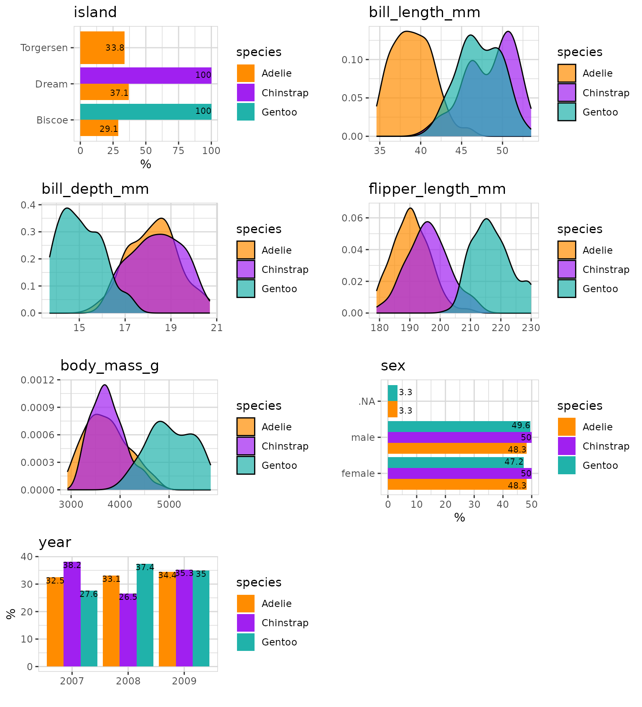
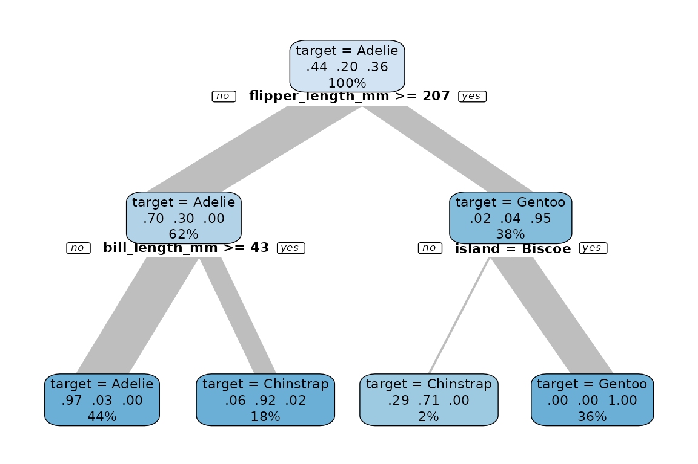
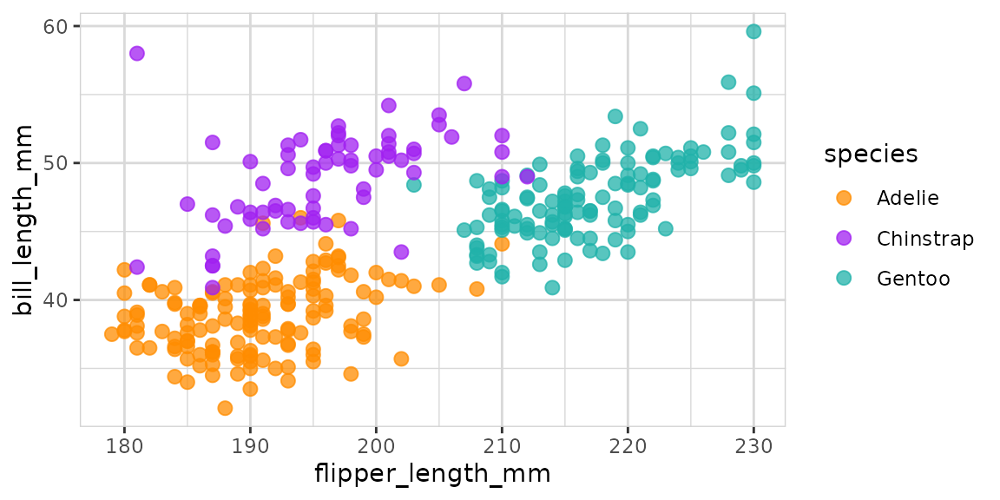

Explore penguins
Roland Krasser
2025-03-29
Source:vignettes/explore-penguins.Rmd
explore-penguins.RmdHow to explore the penguins dataset using the explore package.
The explore package simplifies Exploratory Data Analysis (EDA). Get faster insights with less code! We will use < 10 lines of code and just 6 function names to explore penguins:
| function | package | description |
|---|---|---|
library() |
{base} | load a package |
filter() |
{dplyr} | subset rows using column values |
describe() |
{explore} | describe variables of the table |
explore() |
{explore} | explore graphically a variable |
explore_all() |
{explore} | explore all variables of the table |
explain_tree() |
{explore} | explain a target using a decision tree |
The penguins dataset comes with the palmerpenguins
package. It has 344 observations and 8 variables. (https://github.com/allisonhorst/palmerpenguins)
Furthermore, we use the packages {dplyr} for filter()
and %>% and {explore} for data exploration.
library(dplyr)
library(explore)
penguins <- use_data_penguins()
# equivalent to
# penguins <- palmerpenguins::penguinsDescribe variables
penguins %>% describe()
#> # A tibble: 8 × 8
#> variable type na na_pct unique min mean max
#> <chr> <chr> <int> <dbl> <int> <dbl> <dbl> <dbl>
#> 1 species fct 0 0 3 NA NA NA
#> 2 island fct 0 0 3 NA NA NA
#> 3 bill_length_mm dbl 2 0.6 165 32.1 43.9 59.6
#> 4 bill_depth_mm dbl 2 0.6 81 13.1 17.2 21.5
#> 5 flipper_length_mm int 2 0.6 56 172 201. 231
#> 6 body_mass_g int 2 0.6 95 2700 4202. 6300
#> 7 sex fct 11 3.2 3 NA NA NA
#> 8 year int 0 0 3 2007 2008. 2009There are some NA-values (unknown values) in the data.
The variable containing the most NAs is sex. flipper_length_mm and
others contain only 2 observations with NAs.
Data cleaning
We use only penguins with known flipper length for the data exploration!
We reduced the penguins from 344 to 342.
Which species?
What is the relationship between all the variables and species?
data %>%
explore_all(
target = species,
color = c("darkorange", "purple", "lightseagreen"))
We already see some strong patterns in the data.
flipper_length_mm separates species Gentoo,
bill_length_mm separates species Adelie from Chinstrap. And
we see that Chinstrap and Gentoo are located on separate islands.
Now we explain species using a decision tree:
data %>% explain_tree(target = species)
We found an easy explanation how to find out the species by just using flipper_length_mm and bill_length_mm.
- If
flipper_legnth_mm >= 207, it is a Gentoo penguin (95% right) - If
flipper_length_mm < 207andbill_length_mm < 43, it is a Adelie penguin (97% right) - If
flipper_length_mm < 207andbill_length_mm >= 43, it is a Chinstrap penguin (92% right)
Now let’s take a closer look to these variables:
data %>%
explore(
flipper_length_mm, bill_length_mm,
target = species,
color = c("darkorange", "purple", "lightseagreen")
)
The plot shows a not perfect but good separation between the 3 species!